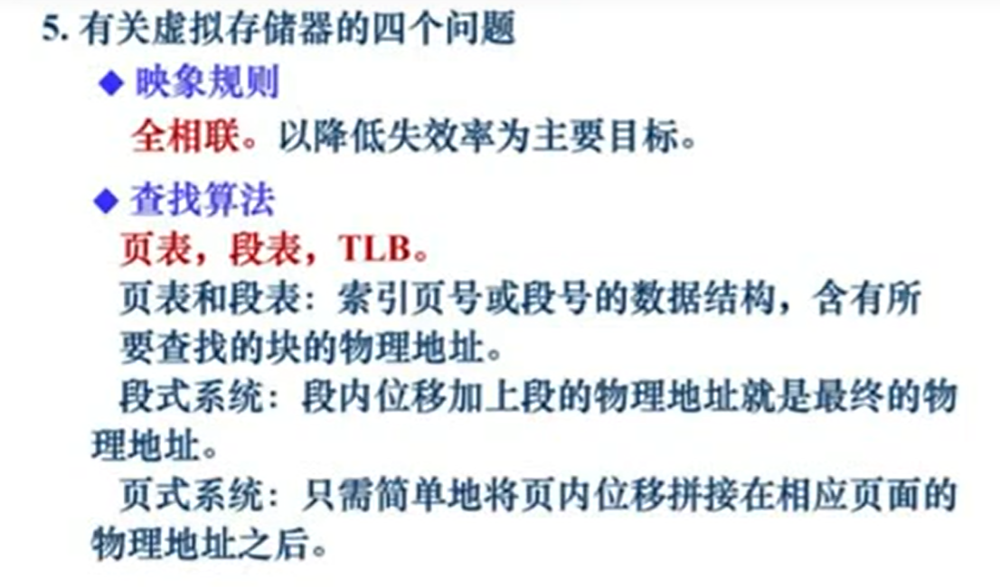

[TOC]
复习的重点
-
选择题（20），填空题（10）、问答题（25）、综合体（45）
-
附录A/B/C 、章节1、2、3、4
-
指令集架构的特性，主要涉及的内容，MIPS ISA 常用元素
-
影响程序性能的因素
-
Amdahl定律的原理和应用
-
流水线的特性，影响流水线性能的因素
-
缓存的架构，配置，读写，及常用的优化技术；常用的缓存管理策略的原理的方法
-
指令级并行的定义，以及提升指令级并行的关键技术；循环展开、指令调度、乱序执行、推测执行等。
-
分支预测的主要原理，解决的问题
-
储存的架构，基本原理
-
数据相关，以及流水线冒险分析
-
虚拟存储器的核心原理，优点。
1、指令集体系结构 ISA
ISA主要特性：
-
指令集：ISA定义了一组机器指令，这些指令控制计算机执行各种操作。指令集通常包括算术操作、逻辑操作、存储器操作、控制转移操作等。
-
寻址方式：ISA描述了计算机如何访问内存，通常有直接寻址、寄存器间接寻址、立即寻址、相对寻址等多种寻址方式。
-
数据类型：ISA规定了计算机支持的数据类型，例如整数、浮点数、字符等。
-
寄存器：ISA规定了计算机中的寄存器数量、种类和功能。寄存器通常用于暂存数据、操作数和指令等。
-
操作模式：ISA规定了计算机的操作模式，例如用户模式和内核模式。不同的操作模式具有不同的特权级别和访问权限。
-
异常处理：ISA规定了计算机如何处理异常情况，例如非法指令、除零错误等。通常会触发相应的异常处理程序。
-
性能特性：ISA也涉及计算机的性能特性，例如指令执行的时钟周期数、指令并发执行的能力等。
MIPS ISA常见的元素
-
寄存器：MIPS ISA有32个通用寄存器，每个寄存器都是32位宽度。这些寄存器可以用于存储数据和地址，以及进行算术和逻辑操作。
-
指令格式：MIPS指令由6个字段组成，包括操作码字段（opcode）、源寄存器字段（rs）、目标寄存器字段（rt）、立即数字段（immediate）、跳转地址字段（address）和功能码字段（funct）。
-
数据传输指令：MIPS ISA提供了多种数据传输指令，包括load和store指令。load指令从内存中读取数据到寄存器中，store指令将数据从寄存器中写入内存中。
-
算术指令：MIPS ISA提供了多种算术指令，包括加法、减法、乘法、除法等。这些指令可以用于实现各种数学运算。
-
逻辑指令：MIPS ISA提供了多种逻辑指令，包括与、或、非、异或等。这些指令可以用于逻辑运算和位操作。
-
控制指令：MIPS ISA提供了多种控制指令，包括跳转指令、分支指令和函数调用指令。这些指令可以用于控制程序的执行流程。
-
浮点指令：MIPS ISA还提供了浮点指令，用于执行浮点运算。这些指令可以用于计算科学、工程和图形学等领域中的复杂运算。
-
协处理器：MIPS ISA还支持协处理器，用于执行特定的任务，例如浮点运算和向量处理。MIPS ISA的第一版支持单个协处理器，后续版本支持多个协处理器。
2、影响程序性能的因素
-
CPU时钟频率：CPU时钟频率是指CPU在单位时间内执行指令的次数。CPU时钟频率越高，CPU在单位时间内执行指令的次数就越多，程序执行速度也就越快。
-
CPU架构和指令集：不同的CPU架构和指令集对程序的执行效率有着很大的影响。比如，x86架构的CPU和ARM架构的CPU在执行同样的指令时，性能可能会有很大的差异。
-
缓存：缓存是计算机系统中用来提高数据访问速度的一种机制。合理利用缓存可以减少CPU对内存的访问，提高程序的执行效率。
-
多核处理器：多核处理器可以使程序并行执行，从而提高程序的执行效率。但是，对于某些类型的程序，多核处理器并不能提高程序的执行效率。
-
IO
CPUtime = IC x CPI x 时钟周期时间
总时间 = CPUtime + IOtime
3、Amdahl定律
Amdahl定律的原理是，当一个计算任务中有一部分是必须顺序执行的，而另一部分可以并行执行时，那么并行执行的部分所占的比例越高，总体执行时间就会越短。但是，即使并行执行的部分占比很高，总体执行时间也不会无限缩短，因为必须顺序执行的部分会成为瓶颈，限制了整个任务的执行效率。
Amdahl定律的自我阐述：当我们尝试优化某个部分的时候，整个系统的性能提升程度受到该部分优化程度的限制。
Amdahl定律可以用以下公式表示：
-
加速比 = 1 / (1-f + f/s)
Amdahl定律的应用包括：
-
在设计并行计算系统时，可以使用Amdahl定律来确定并行计算部分的比例和并行计算处理器的数量，以达到最优性能和最大加速比。
-
在优化并行算法时，可以使用Amdahl定律来确定哪些部分可以并行计算以及如何平衡并行计算和必须顺序执行的部分的比例，以达到最大加速比。
-
在比较不同并行计算系统的性能时，可以使用Amdahl定律来计算它们的加速比，以评估它们的性能和效率。
4、流水线的特性，影响流水线性能的因素
主要特性：
-
流水线不能缩短单个任务的响应时间，但是可以提高吞吐率
-
流水线速度受限于最慢流水站的速度
-
流水线中多个任务是并行处理的
-
最大加速比 = 流水站数
影响流水线性能的因素
-
数据相关，结构相关和控制相关
-
缓存的缺失
-
分支预测错误、清空分支
-
流水线注入和排空时间
引起流水线停顿的主要原因
-
资源冲突
-
相关造成冒险
数据相关.控制相关 -
长延迟错做破环正常流水节奏
数据相关的类型
-
真相关：RAW
-
输出相关：WAW -> MIPS五级流水线下不会出现，因为没有打乱指令的执行顺序
-
反相关：WAR
-
控制相关：PC
控制流指令的解决发难
-
暂停流水线的处理
-
猜测下一跳指令的地址
-
使用延迟分支技术
5段流水的数据相关检测机制
-
在ID段可以知道当前指令所需要的源寄存器的编号，将这两个编号和处于EX/MEM/WB段的指令的目标寄存器编号分别进行比较，若相同，则发生了数据相关。
相关是程序固有的一种属性，它反映了程序中指令之间的相互依赖关系
5、指令级并行的定义，以及提升指令级并行的关键技术；循环展开、指令调度、乱序执行、推测执行等。
分支指令：
-
分支指令如果使用上一条指令的结果作为分支条件，将要延迟一个节拍。
流水线冒险：对于具体的流水线来说，相关导致指令流中的下一条指令不能在指定的时钟周期执行
指令级并行的定义
-
利用流水线使指令重叠并行处理，以提高性能，这种指令之间潜在的并行性称为指令级并行（ILP）。
指令调度和循环展开
-
静态调度：编译器调度
-
动态调度：专门硬件调度
Tomasulo算法
-
通过寄存器重命名来动态消除相关以减少流水线造成的停顿。
-
动态调度会导致乱序执行，这样就会增加异常处理的难度，因为现场可能和按照顺序执行的现场不一样。
-
该算法不检查WAR和WAW相关。通过算法的本身会解决他们。
-
保留站和缓冲为虚拟功能部件
-
指令中的寄存器被数值或者指向保留站的指针代替，这一过程被称为：寄存器重命名。 -
寄存器重命名解决WAW,WAR相关 -
按序发送、乱序执行、乱序完成。
-
CDB公共数据总线
-
Tomasolu算法不能解决RAW相关，只能把RAW相关的可能性降到最小。
-
保留站的主要功能：
-
保存还没有处理完的指令，包括其操作数，此外保留站还有寄存器换名的功能，它可以消除名相关来提升指令处理的性能。
计分板调度算法
-
该算法并没有实际解决冲突，如果存在结构冒险和数据冒险就会停止等待直到冲突消失
6、分支预测的主要原理，解决的问题
分支预测
-
BHT（分支历史表）/BTB/前瞻执行 -
根据分支指令的过去历史，预测其将来的行为
-
相比于静态预测，动态预测有更好的预测准确度和适应度
-
分支预测的两个步骤：1、预测。2、找目标地址
BHT 、BPB： 分支历史表、分支预测缓冲器

-
BHT：不计算分支目标
-
BHT只有当预测分支是否成功所需要的时间大于确定分支目标地址所需要的时间才是有效的。
BTB: 分支目标缓冲器
基于分支预测的前瞻执行
-
前瞻执行结合了三种思想：
-
动态分支预测 -
在控制相关的结果尚未出来之前，前瞻的执行后续指令 -
用动态调度对基本块的各种组合进行跨快调度-
前瞻的关键思想：允许指令乱序执行，但是必须顺序确认
前瞻执行的指令执行步骤
-
流出
-
执行
-
写结果
-
确认
-
-
前瞻执行优点：通过ROB实现了指令的顺序完成，从而能够实现精确异常
-
前瞻执行缺点：硬件复杂
-
推测执行中的ROB的主要功能：
-
ROB首先得负责Tomasolu算法中保留站的换名功能；此外他还负责对处理完还没有提交的指令进行重排序，来确保按序提交，使得错误推测情况下执行的指令的计算结果不会被提交。
7、储存的架构，基本原理
存储的技术：
-
DRAM：电荷会丢失，需要周期性刷新
-
SRAM
为了实现又大又快又便宜，我们就需要使用多级存储器，也就是存储层次架构。
局部性原理
-
空间局部性
-
时间局部性
-
访存延迟的时间 = 命中的时间 + 缺失率 x 下一层访存的延迟
8、缓存的架构，配置，读写，及常用的优化技术；常用的缓存管理策略的原理的方法
缓存的常见架构
-
直接映射相联缓存
-
全相联缓存
-
组相联缓存
-
多级缓存
映像规则
-
直接相联：一个block只能保存到缓存中唯一的位置
-
全相联：一个block可以放到缓存中的任意一个位置
-
组相联：一个block可以放到缓存中的一个组中的任意一个位置
n路组相联：每个组里面有n块的组相联
替换算法：
-
随机替换：实现简单
-
FIFO（先进先出）：实现简单
-
LRU（最近使用最少）： 失效率低
-
LFU（最不常用）：最不常使用法
写操作：
-
写操作必须在确认是否命中之后才可以进行
-
写访问有可能会导致Cache和主存内容不一致
两种写策略：
-
写直达法（Write through）：不仅写入Cache还写入下一级存储器，但速度慢。
-
写回法（Write back）：速度快，占用存储器频带低
当发生写缺失时，是否在缓存中分配一个block
-
写分配
-
写不分配
相联度：组相联中一个组中的block的数量
缓存缺失的分类：
-
强制性缺失：首次访问一个block，发生缺失
-
容量缺失：缓存空间小了，不能容纳所有内容，即使采用全相联和最优替换算法也会发生缺失。
-
冲突缺失：既不是强制缺失，也不是容量缺失的其他缺失（只有在直接映像中和组相联中才会有，全相联中不会有该种缺失）
缓存的性能公式：
-
由上面的公式可以得到优化缓存的性能可以减少失效率、减少失效开销、减少命中开销。
减少三种失效的方法：
-
强制性失效：增加块大小，预取
-
容量失效：增加容量
-
冲突失效：提高相联度
相联度超过8的方法的实际意义就不大了
1、减少失效率
-
增加块的大小
-
增加相联度：相联度不要超过8
-
Victim Cache：设置一个全相联的小Cache，把Cache替换出去的内容放到Victim Cache中。对会产生颠簸现象很有效。（硬件开销增加）
-
伪相联Cache
-
硬件预取
-
编译器控制的预取
-
用编译器技术减少Cache失效
2、减少失效开销
-
写缓冲及写合并
-
让读失效优先于写
-
子块放置技术
-
请求字处理技术
-
多级Cache
-
非阻塞Cache技术
3、减少命中时间
-
采用容量小结构简单的Cache
-
虚拟Cache
-
流水化写
9、主存与虚拟存储器的核心原理，优点。
主存的主要性能指标
-
延迟
-
带宽
内存的能耗是一个逐渐重要的核心问题
主存的组织技术
-
增加存储器的宽度- 会导致Cache与CPU之间要加一个多路选择器。
-
采用简单的多体交叉存储器 - 高位交叉编址和低位交叉编址，低位交叉编址非常利于并行处理。
-
独立存储体
虚拟存储器 ： 主存-辅存层次

-
TLB ：快表
虚拟存储技术的核心原理
-
虚拟存储技术的核心原理是将计算机的物理内存和磁盘存储结合起来，使得程序可以访问比物理内存更大的虚拟地址空间
虚拟存储技术的优点：
-
主存成为整个存储层次架构中的另外一层
-
使得程序能使用的地址空间超过可使用的物理内存大小
-
允许多个用户多个程序分时地共享有限地内存空间和地址空间
-
提高昂贵内存地利用率
-
提高程序开发效率
-
每个程序认为他在当前内存里它是独立运行地
-
内存保护易于实现
-
系统能获得更好地性能